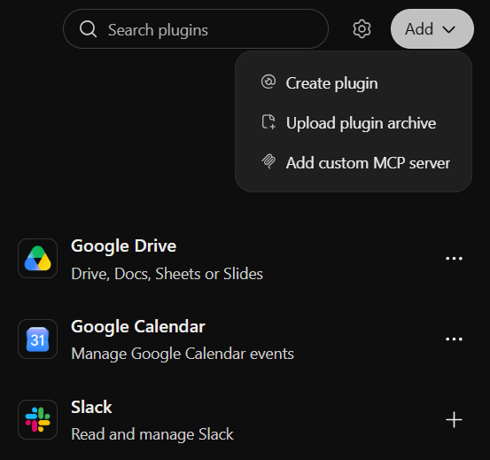

MCP and agent frameworks
One standard “plug” to connect tools to any AI app
Hosts, servers, Claude connectors, the MCP registry, security, your own mini server, agent frameworks. Data as of October 2026.
⏱ 2 min. Welcome. In L11 we described get_order_status by hand for one model in AI Studio. Today: how to build a tool once and plug it into any AI app: Claude, ChatGPT, VS Code, LM Studio. There is a standard for this, MCP, the Model Context Protocol.
Plan: why a standard, how it works, where you have seen it (Claude connectors), permissions, the server registry, local and remote servers, your own mini server, security. After the break: agent frameworks, when you need one, agents talking to agents, an exercise and homework.
Without a standard, every AI app is wired to every service separately
⏱ 4 min. In the last lesson get_order_status lived inside one AI Studio chat. What if Claude, ChatGPT, VS Code and your own bot all need it? Without a standard every app-service pair is wired with separate code: each has its own tool format, its own login, its own errors.
On the left: three apps and three services, nine separate links. On the right, the same through MCP: each connects once to the shared standard, six links. The more apps and services, the bigger the gain.
MCP is like USB-C for AI apps: one plug for any tool
⏱ 5 min. The official docs compare MCP to a USB-C port: as USB-C connects devices in a standard way, MCP connects AI apps to external systems in a standard way. On the left the apps: Claude, ChatGPT, VS Code, LM Studio. On the right what we connect to: Google Drive, GitHub, Figma, your database.
Anthropic created MCP in November 2024 and opened it as a standard; OpenAI, Google and Microsoft adopted it. Important: MCP does not replace function calling from L11. Inside it is the same mechanism: the model proposes a call, the program runs it. MCP standardises how the program learns about tools and how it calls them.
Three roles: the host app, a client inside it and a server with tools
⏱ 5 min. Three roles. The host is the app where you talk to the AI: Claude, ChatGPT, VS Code. The server is a separate program that offers tools and data: the Google Drive server can search and read files, the GitHub server issues and code. The client is a small “socket” inside the host, one per connected server; the user never sees it.
A server can offer three kinds of things. Tools — actions, like our get_order_status. Resources — data to read: files, database records. Prompts — ready-made templates, such as “summarise this issue”. Most often you will meet tools.
Connectors in Claude are MCP servers: switch on and use

⏱ 5 min. If you did L09, you have already used MCP. In Claude: the plus button → Connectors (for permanent setup: Customize → Connectors). Each list item is an MCP server: Atlassian, Figma, Gmail, Google Calendar, Google Drive. The switch turns it on or off for this chat. Add connector connects a new one, including your own by URL. Manage connectors sets which of a server’s tools are allowed.
Advice from L11: the fewer tools are on, the less the model gets confused. A chat about leave does not need GitHub.
Before a tool call Claude asks permission and shows what it will send

 zoomed
zoomed⏱ 5 min. This is the “human in the loop” rule from L11 inside a real product. We asked Claude to draw a complaint-handling diagram, and it decided to call the Generate Diagram tool from the Figma server. Before calling, Claude shows which tool, which server and exactly what it will send — here the diagram code with the complaint text.
Three buttons. Decline — refuse. Allow once — allow this time. Always allow — stop asking for this tool. Rule: “always” only for safe tools that read. Anything that sends emails, deletes, pays or publishes gets approved every time, after reading what is being sent.
In ChatGPT this is called Plugins: you can add your own MCP server there too

⏱ 4 min. The same standard in ChatGPT. The Plugins section (formerly apps and connectors): ready-made Gmail, Google Drive, GitHub, Google Calendar, Outlook, Slack. The Add button → Add custom MCP server: your own server by internet address (a local one only through a secure tunnel). Plugins in ChatGPT also replace GPTs, which retire on 11 December 2026 — see L13. Adding your own server needs a paid plan (developer mode); OpenAI’s docs do not list the free plan as eligible.
More hosts: VS Code, Cursor and Codex (coding agents, L16), LM Studio since 0.3.17 (Program → Install → Edit mcp.json, tools for the L10 local model), Microsoft Copilot Studio, the Gemini app (US and English only for now). Ollama is not a host itself: it serves the model to an app.
The official registry: tens of thousands of servers, and anyone can publish

⏱ 4 min. Where to find servers. The official registry at registry.modelcontextprotocol.io is still in preview. We counted about 44 thousand entries via its API. Look at “recently updated”: from agent chat rooms to crypto data. The registry stores descriptions only and does not check whether a server is safe.
Rule: for a popular service, look for the company’s own server. GitHub, Notion, Figma, Atlassian, Stripe and Slack run official servers; GitHub, for example, hosts its own at api.githubcopilot.com/mcp, and the old package from the examples repo is deprecated. A third-party server for your mail or bank is a red flag.
The same L11 function becomes an MCP server in 10 lines
from mcp.server import MCPServer
mcp = MCPServer("courier") # server name
@mcp.tool()
def get_order_status(order_id: str) -> dict:
"""Current status and ETA of one delivery order."""
return {"status": "on the way", "courier": "Anna", "eta_minutes": 12}
if __name__ == "__main__":
mcp.run() # run on this computer⏱ 5 min. For those who code. The official Python package mcp (version 2, Python 3.11+) contains the MCPServer class, the shortest way to build a server; older articles call it FastMCP. Create a server named courier, put @mcp.tool() above the function, and get_order_status from L11 becomes an MCP tool. The docstring again serves as the description for the model. mcp.run() starts the server on this computer.
The key difference from L11: there the function lived inside one app. Here it is a separate server that plugs into any MCP host. Tested with mcp 2.3.0 on 16.10.2026; before showing it, install the package (pip install mcp) and test it again.
Connecting is a few lines of settings: where the server is and how to start it
{
"mcpServers": {
"courier": {
"command": "C:\\courier\\.venv\\Scripts\\python.exe",
"args": ["C:\\courier\\courier_server.py"]
}
}
}⏱ 4 min. For a host to know about a server, you give it a few lines of settings. For a local server: a name, a start command and arguments — the host starts the program on your computer itself. Claude Desktop (claude_desktop_config.json), LM Studio and Cursor (mcp.json) use this mcpServers format; VS Code uses a similar one with a servers key. Give the full path to the server file. Give the full path to the python.exe that has mcp installed, for example C:\courier\.venv\Scripts\python.exe: the host may not find a bare “python”.
Remote servers live on the internet: you give an address and sign in with your account, as when connecting Google Drive in Claude. Before connecting your own server, check it in MCP Inspector — the official tool that lists a server’s tools and lets you call them by hand.
Prompt for a coding agent: Codex in ChatGPT or Antigravity (free, with limits), Claude Code (paid)
Build a Python MCP server for a courier service. Synthetic data only. 1. The official mcp package v2 (MCPServer class), server “courier”, data from orders.json (5 orders). 2. Tools: get_order_status(order_id) — read only; create_return(order_id, reason). 3. Good docstrings: what it does, when to call it. 4. Test the server in MCP Inspector and show the tool list. 5. Give me the mcpServers settings for Claude Desktop and LM Studio.
⏱ 4 min. As in L10 and L11, you do not have to write it by hand. The prompt describes a server with two tools, good descriptions and a check in MCP Inspector. A coding agent creates the project, writes the code, runs Inspector and hands you the settings for Claude Desktop and LM Studio.
Linking the lessons: the L10 model in LM Studio + the server from this prompt = a fully local support agent that sends no data outside. This is an optional homework path. What a coding agent is and how to choose one: L16.
A connected server gets access to your data. Connect only trusted ones
- A server from a known publisher or your own company
- Least privilege; switch off what you do not need
- Read the permission prompt
- “Always allow” only for reading
- Work data only through company-approved connectors
⏱ 5 min. An MCP server is a program you give access to your mail, files and tasks. Four typical risks. Tool poisoning: a command hidden in a tool description the model reads; the user does not see it, the model may obey. Injected text in data: the same prompt injection as in L11, through emails and pages the server reads. Too many permissions: a server asks for more than it needs. A rug pull: a server was safe, then an update changed what it does.
The rules are simple: connect servers from known publishers or your own company, grant least privilege, switch off what you do not need, read the permission prompt and allow “always” only for reading. For work data, only connectors approved by your company.
Function calling, MCP and a framework are nested layers; do not mix them up
⏱ 4 min. These three words get mixed up. Function calling (L11) answers how the model asks for an action. MCP answers how an app finds ready-made tools and calls them in a standard way. An agent framework answers who runs the loop: how many steps, what to remember, where to ask a human, how to log.
The layers stack: a framework can use MCP servers, and inside it is still function calling. But do not start with “MCP plus a framework” for a task that one chat with two functions would solve.
In two years MCP became a shared standard, not one company’s project
⏱ 4 min. Why MCP is worth learning. According to the official MCP blog, the SDKs are downloaded almost half a billion times a month. Already in December 2025 there were over 10 thousand active public servers. That same December Anthropic donated MCP to the Agentic AI Foundation at the Linux Foundation, co-founded by Anthropic, Block and OpenAI. So the standard no longer belongs to one company.
The downside of fast growth: the standard changes. The 28 July 2026 spec became simpler for cloud servers; some old features were deprecated. The Python library moved to version 2, and code from 2025 articles may not run.
5 minutes: disconnect from every server
Next: agent frameworks, when you need one, agents talking to agents, an exercise and homework.
⏱ 5 min. Press “Start”.
Agent frameworks: a ready loop, memory, approvals and logs
⏱ 5 min. An agent framework is a library that takes over the L11 loop and everything around it: memory between steps, handing a task to another agent, pauses for human approval, logging (tracing). The OpenAI Agents SDK and the Claude Agent SDK come from model vendors; the Claude Agent SDK uses the same engine as Claude Code; the Python SDK code is MIT, but use of the SDK is governed by Anthropic’s commercial terms.
Google ADK — agents on Gemini and other models with easy deployment to Google Cloud. LangGraph describes an agent as a graph of steps with memory and pauses. Microsoft Agent Framework is the direct successor to AutoGen and Semantic Kernel; AutoGen is now maintenance-only, and Microsoft points new projects to Agent Framework. CrewAI — a “crew” of agents with roles. There are also LlamaIndex and Pydantic AI. Choose by ecosystem: which model and which cloud you work with. On the right of the slide is what a framework takes over: your agent on top (role and rules), the framework in the middle (loop, memory, handoffs, approval pauses, tracing), the model and the MCP servers from the first part at the bottom.
Add complexity only when the simple option stops being enough
⏱ 4 min. A complexity ladder. Start at the top and step down only when you hit a limit. One chat and a couple of functions — function calling is enough. One tool must work in Claude, ChatGPT and your bot — build an MCP server. The agent takes many steps, must remember context, ask for approval and keep a log — use a framework. Several agents from different companies must coordinate — the A2A protocol.
A2A: a standard for agents from different companies to work with each other
for 12–14 May”
⏱ 4 min. The last standard of the lesson, for general understanding. MCP connects an agent to tools and data. A2A, Agent2Agent, connects agents to each other: your assistant agent asks a hotel’s agent to book a room, and they coordinate without knowing each other’s internals.
Google started A2A; version 1.0 shipped in March 2026, and on 17 August 2026 the protocol moved to the same Linux Foundation foundation as MCP. For a beginner it is enough to know the word exists and means agents from different companies talking.
Exercise: which MCP servers to connect, and what to allow?
⏱ 4 min. Chat exercise, 3 minutes. Everyone picks one task and writes which servers are needed, what permissions (read only or write) and where a human must confirm.
Walk-through. Sales: CRM and mail, read only, no confirmation — it is a summary. Accounting: Drive and sheets, read one folder; if the agent edits the sheet — confirmation. Support: tickets and mail; replying to the customer and closing the ticket have consequences, a human confirms. HR: CV files are personal data: only a company-approved connector and only the folder needed.
Homework: pick MCP servers for your task and write the access rules
- Pick a work task where the AI needs your data or services
- Find 2–3 suitable MCP servers (Claude/ChatGPT connectors or the registry)
- Connect one on test data and screenshot the permission prompt
- For each server: publisher, which tools, which permissions it needs
- Rules: what to allow “always”, what every time, what not to connect
genai-homeworks/L12/ ├─ README.md # task, conclusion ├─ servers.md # 2–3 servers: tools ├─ demo.png # permission prompt └─ rules.md # permissions, confirmations
⏱ 5 min. Homework with no required code. Pick a task, find 2–3 MCP servers, connect one in Claude or ChatGPT on test data and screenshot the permission prompt. For each server record the publisher, the tools and the permissions needed. Finally the rules: what to allow always, what every time, what never to connect. On a free plan you cannot add your own server in ChatGPT: use a ready-made Claude connector (Google Drive) or LM Studio with the slide 11 server. Details in L12_05_Homework.
MCP plugs in tools, permissions protect your data, a framework only when there are many steps
⏱ 3 min. Four ideas. MCP is a standard plug: one server works in many apps. Roles: host, client, server; the server offers tools, resources and prompts. Security: read the permission prompt, grant least privilege, “always” only for reading. An agent framework is needed when there are many steps, memory or several agents.
Next lesson: your own assistants without code — projects in Claude, plugins in ChatGPT (they replace GPTs), Copilot agents — and the Agents SDK for those who code.